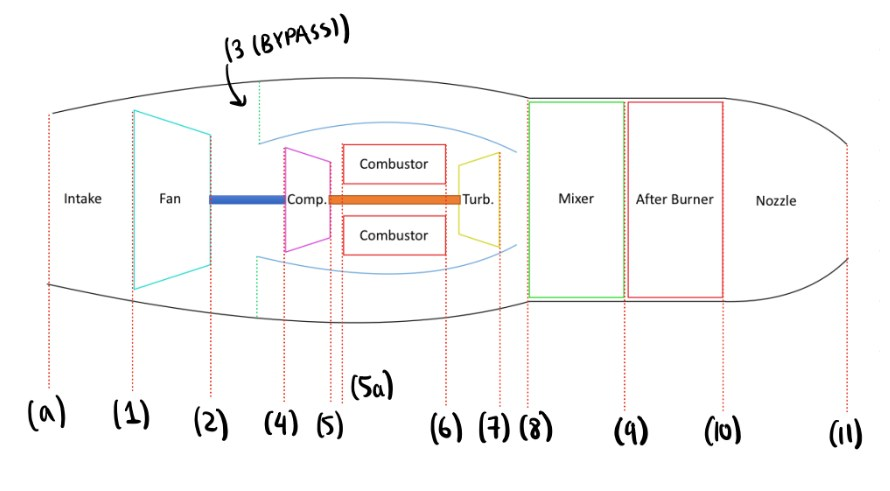
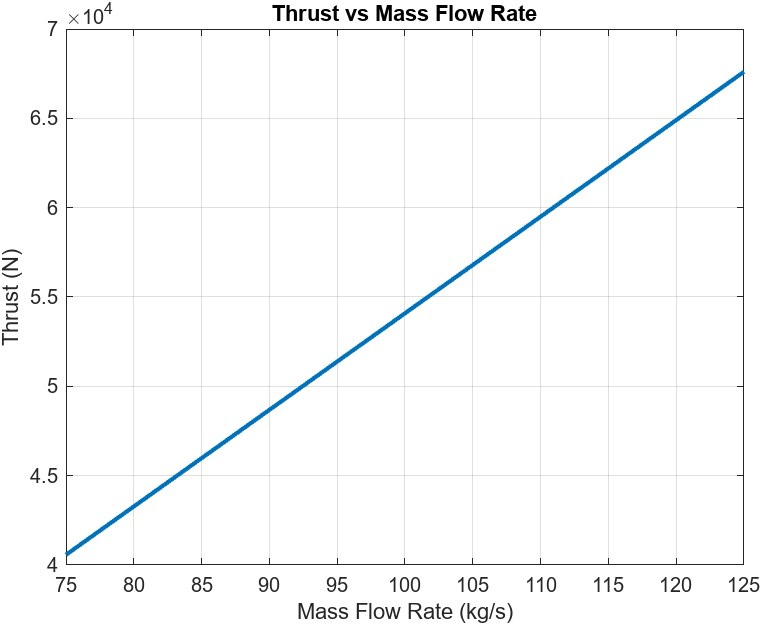
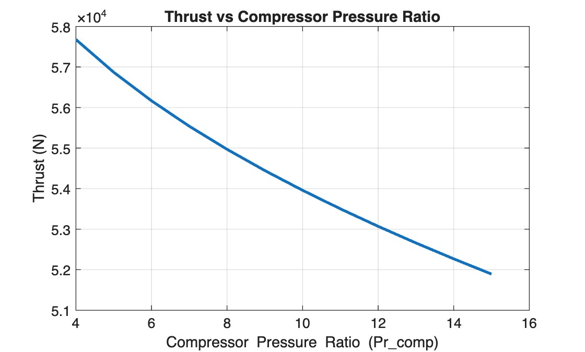
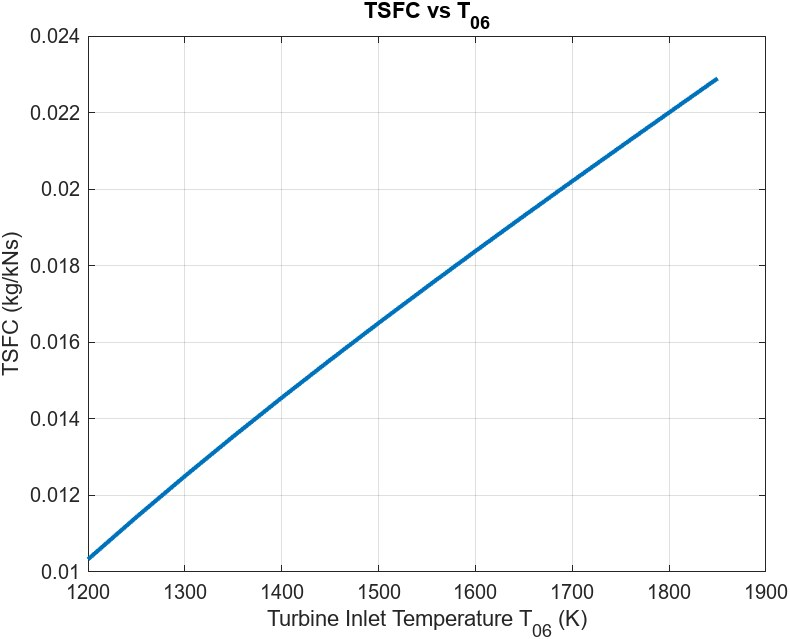
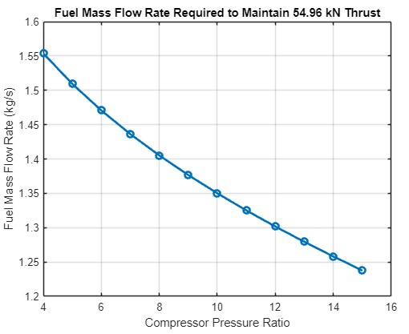

Mixed Turbofan Cycle Analysis
Zero-dimensional MATLAB model of the F100-PW-100
- Year
- 2025
- Context
- MECH 477 · Aerospace Propulsion
- Tools
- MATLAB · Propulsion · Thermodynamics · Cycle analysis





A station-by-station cycle model of the F100-PW-100 afterburning turbofan that predicts dry and afterburning thrust within about 1% of published values, then maps how cycle parameters trade thrust against fuel burn.
Model
I modelled the engine station by station, from intake through fan, bypass duct, compressor, combustor, turbine, mixer, afterburner, and nozzle, using energy balances, ideal-gas relations, and a temperature-dependent specific heat. Because Cp and γ depend on temperature, each station is solved iteratively until the static temperature and Mach number converge. Fuel flow comes from the combustor energy balance at a fixed turbine inlet temperature of 1680 K.
Results
- Dry: 55.0 kN net thrust, 541 N·s/kg specific thrust, 1.42 kg/s fuel flow
- Afterburning: 104.8 kN net thrust and 4.73 kg/s total fuel flow, with TSFC rising about 74%
- At the published 102 kg/s airflow the model gives 55.17 kN dry (published 55.2 kN) and 105.2 kN afterburning (published 106.4 kN)
Parametric studies
I swept airflow (75–125 kg/s), compressor pressure ratio (4–15), fan, compressor, and turbine polytropic efficiencies, and turbine inlet temperature (1200–1850 K), and found the fuel flow needed to hold thrust constant as the pressure ratio changes. Thrust scales almost linearly with airflow while specific thrust and TSFC stay nearly flat. With turbine inlet temperature fixed, raising the pressure ratio lowers fuel flow and TSFC but also lowers thrust.
What I took from it
Cycle parameters are tightly coupled. Changing one at a time, such as compressor efficiency below about 0.45, can push the model into non-physical results, which is why real engines co-optimize pressure ratio, turbine inlet temperature, and component efficiencies together.